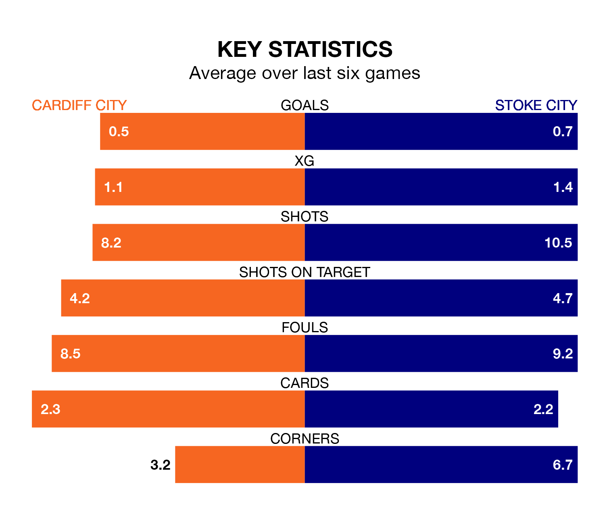

Cardiff City and Stoke City both come into Saturday's kick-off at the Cardiff City Stadium in poor form, having picked up four and three points respectively in their last six games.
The Bluebirds have won one and drawn one of the last six, while the Potters have taken just one win.
In the last 10 years, Cardiff and Stoke have played each other on 10 occasions. Cardiff won three of them, Stoke one, and they drew six times.
On average, the Bluebirds scored 1.2 goals and the Potters 1.1 in those matches.
Their last meeting was on November 4, when they played out a 0-0 draw.
Stoke are 19th in the table after 33 games, of which they have won nine and drawn eight, earning 35 points.
Cardiff are five places ahead of Stoke City in 14th, with 12 wins and five draws putting them on 41 points.
With 30 goals in 33 games so far this season, the Potters are scoring at below the league average rate with 0.9 goals per game. And they are conceding at an average rate, letting in 46 goals at a rate of 1.4 per game.
Cardiff City are also below average scorers, with 1.1 goals per game, compared to a league average of 1.4. They have conceded 1.4 goals per game.
Cardiff's last match was on Tuesday, a 0-0 draw against Blackburn Rovers.
Stoke lost 1-0 against Coventry City last time out, on February 17.
Updated: 10:08 (UTC), 23/02/24